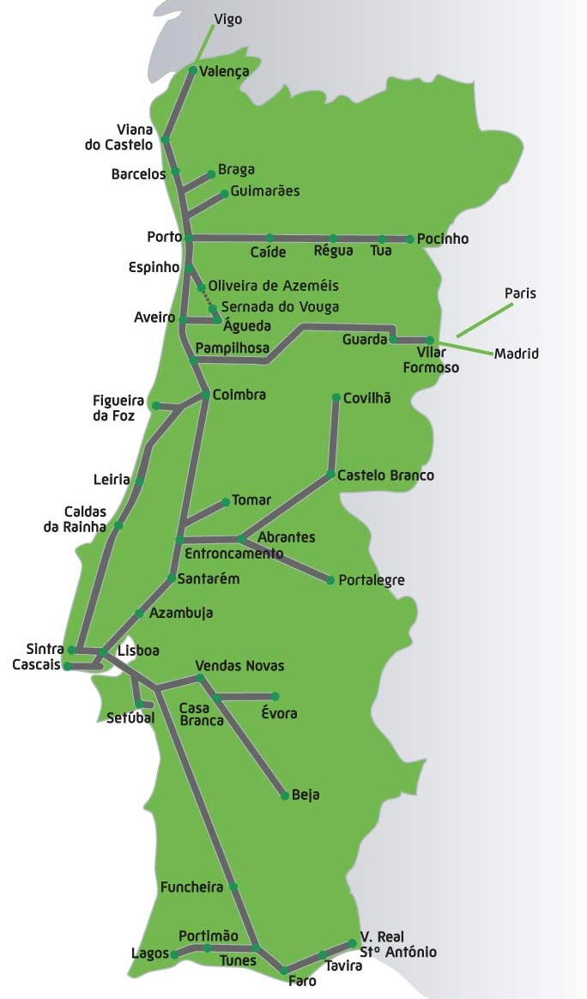

Criado sábado 07 dezembro 2019
Portugal

Itália
Viagens de trem compradas com antecedência
- Em 06/02/2020, de Florença (12:20) para Veneza (14:34): Frecciargento 9416, carro 6 assentos 7D e 8D
- Em 08/02/2020, de Veneza (7:26) para Roma (11:25): Frecciarossa 9405, carro 7, assentos 11D e 12D
- Em 11/02/2020, de Roma (8:34) para Florença (10:11): Frecciarossa 9412, carro 4 assentos 4D e 5D
Viagens pra comprar na hora
- Florença — Pisa — Lucca
- Florença — Siena — San Gimignano